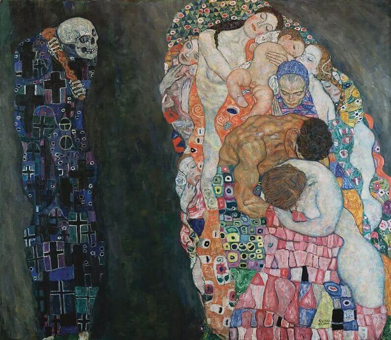
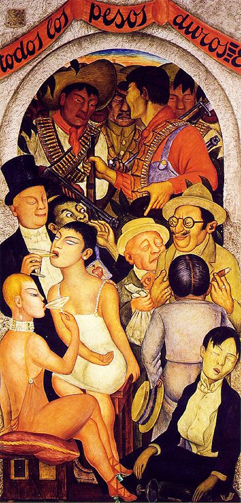
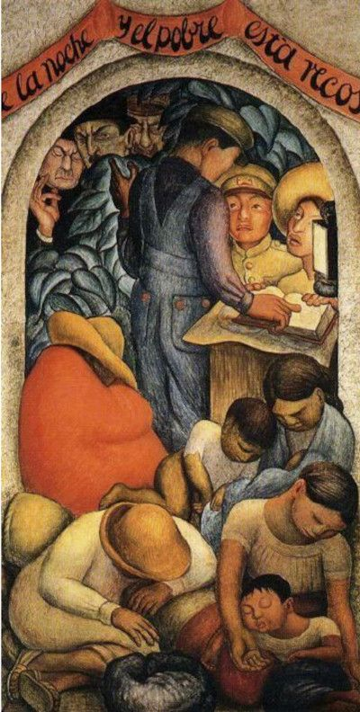
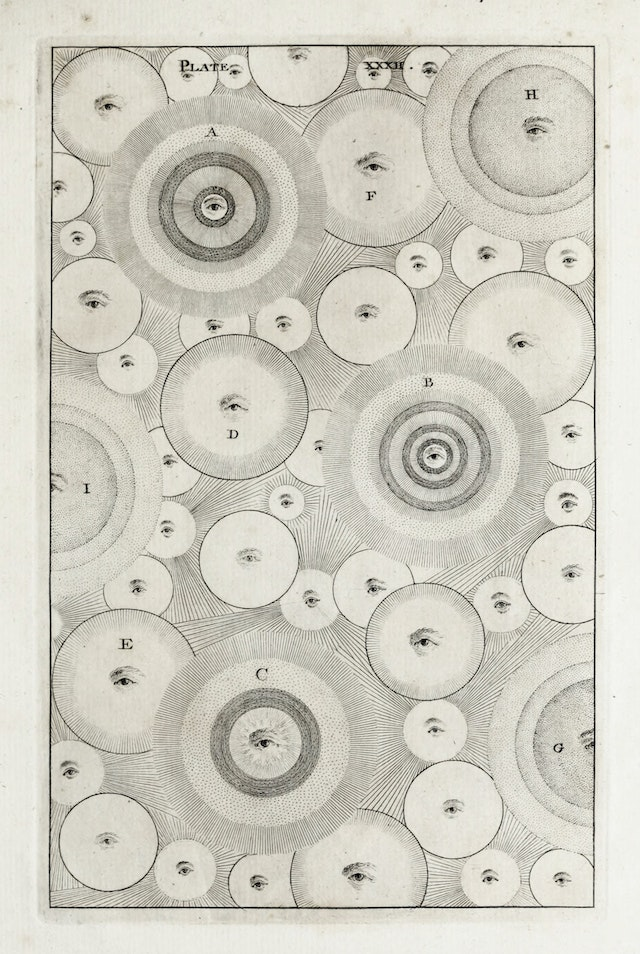

miscellanea
things i've found thought-provoking, and you may too.
-
publications
-
literature
- Maxims - Genre
- Ecclesiastes, Bible
- The Moral Sayings of Publius Syrus
- Meditations, Marcus Aurelius
- Maxims, La Rochefoucauld
- Maxims and Reflections, Goethe
- Jorge Luis Borges
- Ernest Hemingway
- Death in the Afternoon
- A Moveable Feast
- In Our Time
- Robert W. Chambers
- Albert Camus
- The Plague
- The Stranger
- The Crisis of Man
- Franz Kafka
- In the Penal Colony
- The Trial
- Ambrose Bierce
-
art
- Gustav Klimt | Death and Life 
- Giorgio de Chirico | The Soothsayer's Recompense

- Diego Rivera | Night of the Rich 
- Diego Rivera | Night of the Poor 
- Thomas Wright | The Diversity of Infinity 